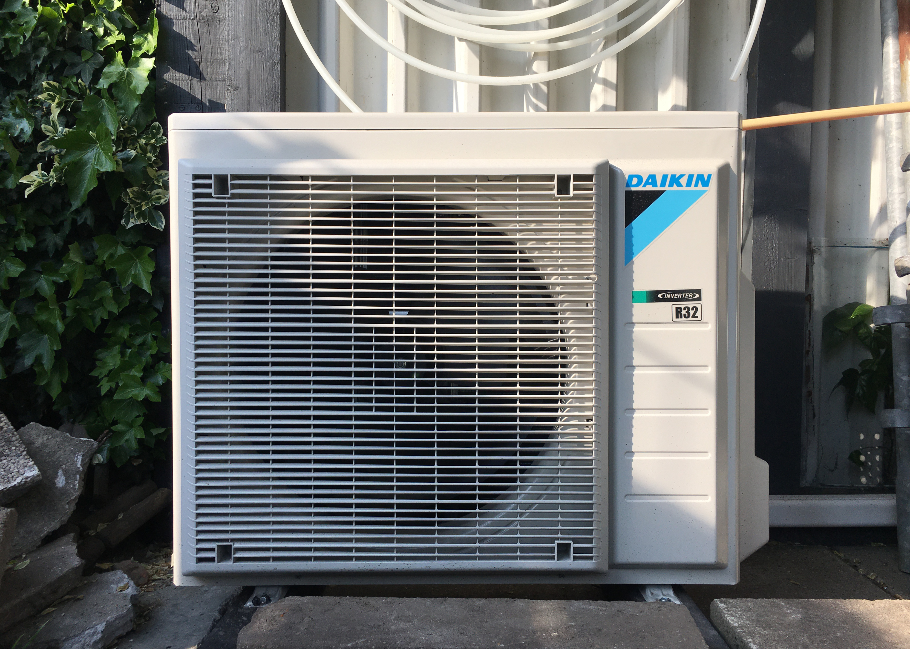

Binnenunit met boiler, buitenunit en bedieningspaneel van de warmtepomp



Onderstaande video gaat over de werking van een all-electric warmtepomp. Deze is niet - zoals een hybride warmtepomp - gekoppeld aan een CV-ketel, maar zorgt zelfstandig voor de verwarming van het water voor de vloerverwarming en voor warm tapwater.
In mijn situatie gaat er niet alleen warm water van de pomp naar de vloerverwarming, maar ook naar de radiators van het oude CV-systeem. Zo helpen de radiators nog een beetje mee de benedenverdieping te verwarmen, en geven ze boven genoeg warmte om daar geen andere voorzieningen (zoals vloerverwarming, infraroodverwarming of lagetemperatuurradiators) te hoeven aanleggen.